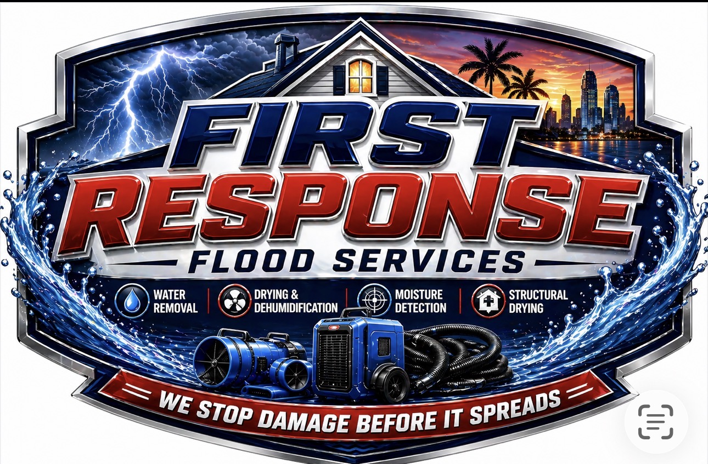

Flood Cleanup • Water Removal • Structural Drying • Moisture Detection
Serving Treasure Coast, Royal Palm Beach, Wellington, West Palm Beach & South Florida
We work directly with your insurance — no stress, no delays.
We respond quickly to help stop water damage before it spreads.
Available day or night when flooding, leaks, or water damage happens.
We help with documentation and work with insurance companies.
IICRC certified service using professional equipment and proven methods.
Our mission is to provide fast, reliable, and professional water damage restoration when homeowners and businesses need it most. We respond immediately, minimize damage, protect your property, and restore your home or business safely and efficiently.
We are committed to honest service, clear communication, and helping customers through stressful situations with confidence.
First Response Flood Services LLC is a South Florida emergency restoration company specializing in water damage cleanup, flood mitigation, structural drying, moisture detection, sanitation, and emergency response.
We proudly serve Treasure Coast, Royal Palm Beach, Wellington, West Palm Beach, Palm Beach County, and surrounding South Florida areas.
Our goal is simple: respond fast, stop the damage, protect your property, and help get your life back to normal.
Flood cleanup, leaks, burst pipes, storm water, and emergency mitigation.
Fast extraction to reduce damage and protect flooring, walls, and property.
Professional drying to remove hidden moisture from structures.
We help locate trapped moisture before it causes bigger issues.
Moisture control and drying to reduce mold risk after water damage.
Cleaning affected areas and helping restore safer conditions.
Water damage spreads fast. Our team is ready day or night to help stop damage before it gets worse.
Call (561) 755-8075✔ Flood cleanup in Wellington
✔ Water extraction in Royal Palm Beach
✔ Emergency drying in West Palm Beach
✔ Moisture detection across the Treasure Coast
✔ Water damage restoration in Palm Beach County
“Fast, professional, and helped stop the water damage before it got worse.”
We provide emergency water damage restoration across South Florida.
Fast response across Palm Beach County, Treasure Coast, and surrounding South Florida areas.
Send your information and we’ll respond as quickly as possible.